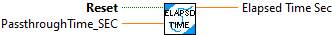
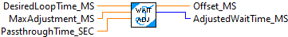

This function retruns the number of seconds that have passed since the RESET input has been true. If RESET has never been true then the time since the first call to this routine is returned.
Inputs:
-- Reset -- boolean -- Restart the elapsed time. This remembers the current time.
-- PassthroughTime -- double float -- Elapsed time clock. (Optional. Default: Read FPGA clock)
Outputs:
-- Elapsed Time -- double -- Number of seconds that have passed since the reset input was TRUE.

This routine fine tunes the wait time for a loop to attempt to provide the loop with more consistent timing and lower jitter.
Inputs:
-- Desired Loop time -- Int32 -- Desired loop time in milliseconds. (Optional. Default: 20.0)
-- MaxAdjustment -- Int32 -- Maximum time in milliseconds to adjust the wait time. (Optional. Default: 5.0)
-- PassthroughTime -- double float -- Elapsed time clock. (Optional. Default: Read FPGA clock)
Outputs:
-- Adjusted Wait Time -- Uint32 -- Updated wait time in milliseconds to feed to the wait VI.
- Offset MS -- double float -- Current value of accumulated loop time error.